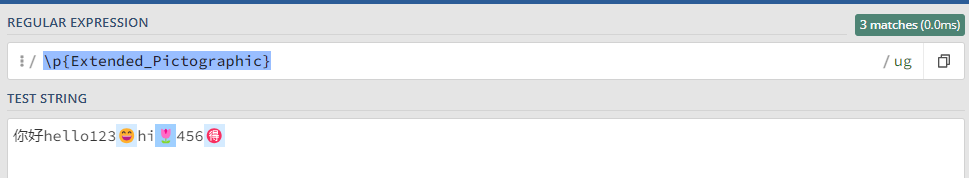
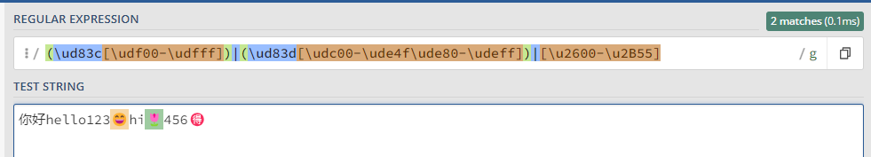

Emoji 正则匹配
前言
要求输入框能输入除了特殊表情外的任意字符。
我的理解就是将 Emoji 排除掉，通过 RegExp 匹配 Emoji 判断是否存在特殊表情。
TL;DR
如果你只是想要一个能够匹配表情的正则，下面这个应该就满足👇： 1
/\p{Extended_Pictographic}/gu.test("你好hello123😄hi🌷456🉐") // true
/\p{Extended_Pictographic}/gu.test("你好hello123") // false
{kind=link}

如果你想匹配 Emoji，可以考虑使用 emoji-regex 这个库。
如果你只需要兼容高版本的浏览器（如 Chrome 112+），你也可以使用 \p{RGI_Emoji}\gv2。
解决过程
对于 Emoji 这种正则，一开始想不到如何构建，理论上它也是属于 String，大致知道 Emoji 和 Unicode 相关，但怎么用正则描述它呢？
所以我的第一步是 Google，得到一个这样的正则：
/(\ud83c[\udf00-\udfff])|(\ud83d[\udc00-\ude4f\ude80-\udeff])|[\u2600-\u2B55]/
拿去 regex101 测试了一下，虽然能匹配到一些 Emoji，但是还是有部分 Emoji 匹配不到。
{kind=link}

上面的正则表达式应该是表示的是一个 Unicode 范围，部分 Emoji (🉐)没匹配上，说明这个范围小了，没有囊括所有的 Emoji。
那么 Emoji 的 Unicode 范围是多少？是不是穷举就行了？
其实没办法用一个固定的范围去表达，因为 Emoji 是持续增加的，每增加一个 Emoji 就增加一个对应的 Unicode，没办法用一个固定的范围去表达所有的 Emoji。
于是又搜索了一下，StackOverflow 有一个 回答，里面提到了用 Unicode character class escape 进行匹配，也就是 /\p{Emoji}/u 和 /\p{Extended_Pictographic}/u 。
什么是 Unicode character class escpae
Unicode character class escape: \p{...}, ¶{…} 是 Character class escape 中的一种。
平时正则中常用的 \d 、 \D 、 \w 、 \W 就是 Character class escape，它们是用来表达一组字符的转义序列 (escape sequence)。
例如 \d 这个转义序列表达的就是 [0-9] 的一组字符 。
而 \p{...} , \P{...} 也是类似的，只是他们用来表达一组 Unicdoe 字符，通过指定 Unicode property 决定匹配什么 Unicode。
例如可以用 /\p{Hex_Digit}/u 去匹配 16 进制的字符：

需要注意的是，使用 Unicode character class escpae 要启用 unicode-aware mode，即加上 /u 标记。
/\p{Emoji}/u- 这个正则实际测试并不符合需求，因为在 Emoji 官方文档 中，
123456789*#也是被看作是 Emoji，如果用这个正则的话，就会把数字也认为是 Emoji，不符合只排除特殊表情的要求。 /\p{Extended_Pictographic}/u- 而 Extended_Pictographic 表示的 Emoji 才是我们认为的那些表情符号。
console.log(
/\p{Emoji}/u.test('flowers'), // false :)
/\p{Emoji}/u.test('flowers 🌼🌺🌸'), // true :)
/\p{Emoji}/u.test('flowers 123'), // true :(
)
console.log(
/\p{Extended_Pictographic}/u.test('flowers'), // false :)
/\p{Extended_Pictographic}/u.test('flowers 🌼🌺🌸'), // true :)
/\p{Extended_Pictographic}/u.test('flowers 123'), // false :)
)
为什么 /(\ud83c[\udf00-\udfff]…/u 的正则无法匹配 🉐
现在，使用 Unicode character class escpae 可以匹配 Emoji 了，但是为什么一开始 Google 搜到的正则 /(\ud83c[\udf00-\udfff].../u 无法匹配 🉐 呢？
为此，首先需要知道 🉐 在 JS 中到底是什么。
String & Unicode
UTF-16 characters, Unicode code points, and grapheme clusters
Strings are represented fundamentally as sequences of UTF-16 code units. In UTF-16 encoding, every code unit is exact 16 bits long. This means there are a maximum of 2^16, or 65536 possible characters representable as single UTF-16 code units.
…
However, the entire Unicode character set is much, much bigger than 65536. The extra characters are stored in UTF-16 as surrogate pairs, which are pairs of 16-bit code units that represent a single character.To avoid ambiguity, the two parts of the pair must be between 0xD800 and 0xDFFF, and these code units are not used to encode single-code-unit characters. (More precisely, leading surrogates, also called high-surrogate code units, have values between 0xD800 and 0xDBFF, inclusive, while trailing surrogates, also called low-surrogate code units, have values between 0xDC00 and 0xDFFF, inclusive.) Each Unicode character, comprised of one or two UTF-16 code units, is also called a Unicode code point. Each Unicode code point can be written in a string with \u{xxxxxx} where xxxxxx represents 1–6 hex digits.
在 JavaScript 中，String 实际是 UTF-16 (16-bit Unicode Transformation Format) 编码的，它以 16 位去表示一个字符（code unit），最多可以表示 65536 (0x0000 - 0xFFFF) 个字符。
这 65536 个字符中包含了大部分常用字符，例如字母，数字，拉丁字符，以及一些东亚文字字符。但是后来发现 65536 并不足以表达所有字符，16 位不够，那就需要增加 Unicode 去表达更多字符。
实现的方法就是定义了 代理对 (Surrogates pairs) , 代理对由 20 位组成。规定前 10 位作为 高代理位 (high-surrogate) ，取值范围是 0xD800 - 0xDBFF。后 10 位为 低代理位 (low-surrogate) ，取值范围是 0xDC00 - 0xDFFF。高代理位和低代理位组成代理对 。由于有 20 位的长度，因此可以表达 1048576 个字符，可以在原来 65536 个字符之上，再增加 1048576 个字符。
概括来说，在 JavaScript 的 String 中常用的字符（如字母，数字，汉字）是由 1 个 UTF-16 编码单元表示的。而超出 65536 (0xFFFF, U+FFFF, \uFFFF) 字符（如 Emoji），则由代理对表示（高代理+低代理，2 个 UTF-16 编码单元）。
为什么 Unicode 要这么设计，参考 Why does code points between U+D800 and U+DBFF generate one-length string in ECMAScript 6?
为什么高代理和低代理这么取值，参考 How was the position of the Surrogates Area (UTF-16) chosen?
为什么匹配不到
现在已经知道 Emoji 是通过代理对表示的，那么 🉐 的代理对是什么呢？
可以通过 String.prototype.chartAt() 或 String.prototype.split() 获得。
'🉐'.charAt(0) // '\uD83C'
'🉐'.charAt(1) // '\uDE50'
'🉐'.split("") // ['\uD83C', '\uDE50']
所以 🉐 的高代理是 \uD83C ，低代理是 \uDE50 。
和 (\ud83c[\udf00-\udfff])|(\ud83d[\udc00-\ude4f\ude80-\udeff])|[\u2600-\u2B55]对比可以发现，正则的范围不包括 \uD83C\uDE50 ，所以匹配不到 🉐。
String 中的相关方法
- String.prototype.charAt()
The charAt() method of String values returns a new string consisting of the single UTF-16 code unit at the given index.
charAt() 返回字符串对应下标的单个 UTF-16 编码单元。
'🉐'.charAt(0) // '\uD83C' '🉐'.charAt(1) // '\uDE50' 'a'.charAt(0) // 'a' 'a'.charAt(1) // '' 'apple'.charAt(0) // 'a' 'apple'.charAt(1) // 'p'
- String.property.charCodeAt()
The charCodeAt() method of String values returns an integer between 0 and 65535 representing the UTF-16 code unit at the given index.
charCodeAt() 返回字符一个
0-65535之间的数字(integer), 是字符串对应下标的 UTF-16 编码单元对应的数值。'🉐'.charCodeAt(0) // 55356 '🉐'.charCodeAt(1) // 56912 'a'.charCodeAt(0) // 97 'a'.charCodeAt(1) // NaN 'apple'.charCodeAt(0) // 97 'apple'.charCodeAt(1) // 112
- String.fromCharCode()
The String.fromCharCode() static method returns a string created from the specified sequence of UTF-16 code units.
fromCharCode() 可以接受多个 0-65535 之间的数字，返回这些 char code 组成的字符串。
fromCharCode() 和 charCodeAt() 是对应的。
'🉐'.charCodeAt(0) // 55356 '🉐'.charCodeAt(1) // 56912 String.fromCharCode(55356, 56912) // '🉐' 'apple'.charCodeAt(0) // 97 'apple'.charCodeAt(1) // 112 'apple'.charCodeAt(2) // 112 'apple'.charCodeAt(3) // 108 'apple'.charCodeAt(4) // 101 String.fromCharCode(97, 112, 112, 108, 101) // 'apple'
- String.prototype.codePointAt()
The codePointAt() method of String values returns a non-negative integer that is the Unicode code point value of the character starting at the given index.
Note that the index is still based on UTF-16 code units, not Unicode code points.
codePointAt() 返回的是一个数字，是字符串对应下标的对应的 Unicode code point (不局限在 0-65535, 而是 0-1114111 (0x10FFFF))。
'🉐'.charCodeAt(0) // 55356 '🉐'.charCodeAt(1) // 56912 '🉐'.codePointAt(0) // 127568 // 需要注意的是，下标是基于 UTF-16 计算的，🉐 是由两个 UTF-16 组成的 // 对于下标 0，可以找到一个代理对，对应 Unicode code point，所以返回了 127568 // 对于下标 1，由于只有低代理位，无法组成代理对，就返回低代理位对应的 Unicode Code Point '🉐'.codePointAt(1) // 56912
- String.fromCodePoint()
The String.fromCodePoint() static method returns a string created from the specified sequence of code points.
fromCodePoint() 可以接受多个 codePoint 数字，返回对应的字符串。
fromCharCode() 的每个参数只能是 0-65535 范围的数字，而 fromCodePoint() 则可以输入 0-1114111 范围的数字。
// fromCodePoint String.fromCodePoint(127568) // '🉐' String.fromCodePoint(55356, 56912) // '🉐' // fromCharCode // fromCharCode 只能处理 0-65535 之间的数字，对于超过 65535 的数字，则截断到最后的 16 位数字 // 等同于 String.fromCharCode(62032) // Number(127568).toString(16) -> '1f250' -> 截取最后的 16 位，即 f250 // Number.parseInt('f250', 16) -> 62032 String.fromCharCode(127568) // '' String.fromCharCode(55356, 56912) // '🉐'
一些注意点
字符串长度
有的字符是由代理对组成的，是两个 UTF-16 编码单元，例如 Emoji。当需要计算他们长度的时候，需要意识到他们是代理对，取决于具体需求去统计长度。
'a'.length // 1 '🉐'.length // 2
如果你希望把一个 Emoji 当作一个字符长度看待，可以使用 Intl.Segmenter，参考 Accurate text lengths with `Intl.Segmenter` API | Sangeeth Sudheer。
Lone surrogates
代理对是由高代理和低代理组成的，如果单独把高代理拎出来，或者高代理和高代理组成代理对，是无法表达有含意的 Unicode 字符的。
具体可以参考 UTF-16 characters, Unicode code points, and grapheme clusters。